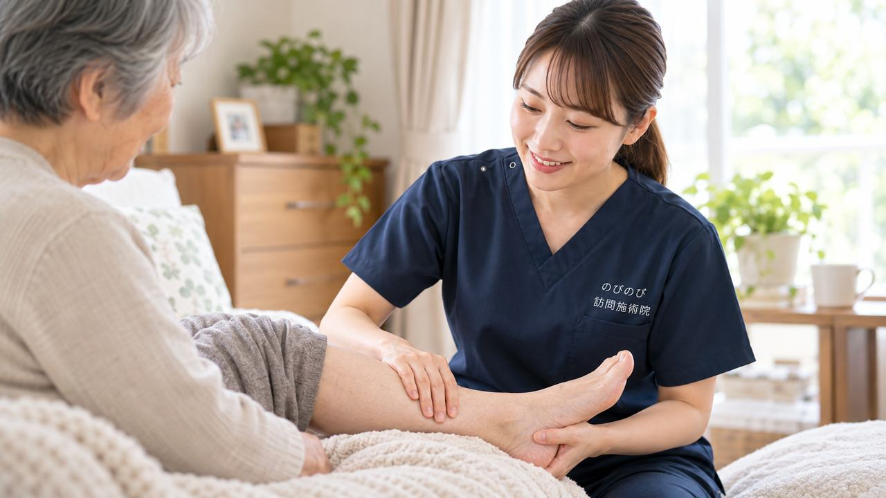

手術でリンパ節をとったあとや、放射線治療のあとなどに、腕や脚がむくんで重だるくなることがあります。むくみそのものへの対応は、圧迫やスキンケア、専門的なケアといった医療的な管理が土台です。むくみ自体は、はり・きゅうの療養費の対象ではありません。ただ、むくんだ手足をかばって固くなる肩や腰、脚のこわばりについては、医師が必要と認めた場合に保険でケアできることがあります。
この記事のポイント
むくみそのものへの対応は、圧迫やスキンケア、専門的なケアといった医療的な管理が土台で、主治医や専門の指導のもとで進める必要があります。むくみ自体は、はり・きゅうの療養費の対象ではありません。ただ、むくんだ手足をかばって固くなる肩や腰、脚のこわばりや痛みについて、医師が鍼やお灸を必要と認めた場合には、保険でケアできることがあります。急な赤み・熱・痛みがあるときは、まず医療機関へご連絡ください。
リンパ浮腫とは、どんな状態か
リンパ浮腫は、リンパ液の流れがとどこおって、腕や脚にむくみがたまる状態です。がんの手術でリンパ節をとったあとや、放射線治療のあとに起こることが多く、片側の腕や脚が重だるく感じられたり、指輪や靴下のあとが深く残ったりします。進むと皮膚が硬くなることもあり、放っておかず、早めに向き合うことが欠かせません。まずは、どんなケアが必要かを主治医に確認するところから始めましょう。
むくみへの対応は、医療的な管理が土台
リンパ浮腫のむくみそのものへの対応は、弾性着衣などによる圧迫、皮膚を清潔に保つスキンケア、専門的なリンパのケア、無理のない運動などを組み合わせた、医療的な管理が中心になります。これらは主治医や、専門の研修を受けた人の指導のもとで進めるものです。自己流で強くもんだり、締めつけたりすると、かえって悪くすることもあるため注意が必要です。訪問鍼灸マッサージは、この医療的な管理に取って代わるものではなく、並行して体のこわばりを和らげる立場です。
むくみ自体は療養費の対象ではありません
はり・きゅうの医療保険（療養費）は、神経痛や関節の痛みなど、決められた症状が対象です。リンパ浮腫のむくみそのものは、この対象には含まれません。ただ、むくんだ手足をかばう姿勢が続くなかで、肩や腰、脚の筋肉が固く緊張し、そのこわばりや痛みについて医師が鍼やお灸を必要と認めた場合には、保険を使ってケアできることがあります。どこまでが対象になるかは、主治医とも相談しながら判断していきます。対象になる方の条件は「誰が受けられる？」で詳しくご紹介しています。
すぐに医療機関へ相談したほうがよいとき
むくんでいる腕や脚が急に赤くなった、熱をもって痛む、発熱をともなう。こうしたときは、蜂窩織炎という皮膚の感染が起きている可能性があります。早めに医療機関へ連絡してください。また、片方の脚が急に強く腫れて痛むときは、血のかたまり（血栓）の可能性もあり、注意が必要です。これらは鍼灸で様子をみるべきではないサインですので、迷わず受診しましょう。
鍼灸でできるのは、こわばりを和らげること
訪問鍼灸マッサージがお手伝いできるのは、むくみを取ることではなく、むくんだ手足をかばって固くなった肩・腰・脚などの筋肉のこわばりを和らげ、体を動かしやすくすることです。リンパ浮腫のある部位そのものへは、強い刺激を避け、主治医の方針に沿って慎重に扱います。はりやお灸は、むくみの周りのこわばりやだるさに、体の状態を見ながら穏やかに用います。鍼灸に加えて、負担にならない範囲の機能訓練も行います。
ご家庭で、力になれること
皮膚を清潔に保ち、乾燥やちょっとした傷を防ぐことは、感染を避けるうえでとても大切です。弾性着衣の使い方や、むくんだ手足を心臓より高くして休むこと、できる範囲で体を動かすことなど、日々のケアは主治医や専門の指導に沿って続けてください。施術のなかで気づいた皮膚の変化などがあれば、ご家族や医療機関へお伝えします。自己流で強くもむことは避け、分からないことは主治医に確認しましょう。
通院がむずかしい方に、自宅でのケアを
リンパ浮腫のケアは、続けることが大切な一方で、腕や脚が重だるいと外出そのものがおっくうになりがちです。がんの治療後で体力が落ちている時期は、なおさら通院が負担に感じられることもあるでしょう。訪問鍼灸マッサージは、ご自宅までうかがって、いちばん楽な姿勢で施術を受けられます。医療的なむくみの管理は主治医や専門の指導のもとで続けていただきながら、それと並行して、体のこわばりやだるさへのケアを自宅で足していく。そうした組み合わせ方ができるのも、在宅で受けられることの利点です。
うかがっていて聞くこと
肩や腰の張りが和らいで体を動かしやすくなったと話される方がいます。一方で、変わらないとおっしゃる方もいて、感じ方には個人差があります。むくみそのものが変わるわけではありませんが、かばう姿勢からくる別のつらさが軽くなることで、日々の動作が少しでも楽になればと思っています。
保険と自己負担のこと
むくみそのものは対象外ですが、それに伴う肩・腰・脚の慢性的な痛みやこわばりについて医師が鍼やお灸を必要と認め、通院がむずかしい状態であれば、はり・きゅうの医療保険の対象になる場合があります。1回の総額は3,950円で、自己負担は負担割合に応じた分だけです。1割の方でおよそ395円が目安です。対象になるかどうか迷うときは、主治医とも相談しながら判断します。対応エリア内であれば出張費は別にかからず、集金は月ごとにまとめて行い、その月の施術の内訳がわかる明細をお渡しします。うかがっている市区は「対応エリアのページ」に一覧があります。
お申し込みからの流れ
はじめに、お電話などで、むくみの状態や受けている治療・ケア、通院の様子、かかりつけの医療機関をお聞かせください。むくみそのものは医療的な管理を土台にしたうえで、伴うこわばりへ鍼灸でどうお手伝いできるかをご説明します。主治医の方針を確認しながら、無理のない程度に進めます。同意書の段取りは当院が引き受けますので、気になることは遠慮なくお尋ねください。
よくある質問
リンパ浮腫は鍼灸で治りますか？
むくみそのものを鍼灸で取るものではありません。むくみへの対応は医療的な管理が土台です。鍼灸は、かばう姿勢からくる肩・腰・脚のこわばりを和らげる役割です。
むくんだところを強くもんでもらえますか？
リンパ浮腫のある部位への強い刺激は避け、主治医の方針に沿って慎重に扱います。自己流で強くもむことも、控えていただくようお伝えしています。
保険で受けられますか？
むくみ自体は対象外ですが、それに伴う肩・腰・脚の慢性的な痛みやこわばりについて医師が必要と認めれば、対象になる場合があります。まずは主治医にご相談ください。
急に赤く腫れて熱っぽいのですが
蜂窩織炎などの感染の可能性があります。鍼灸で様子をみず、早めに医療機関へ連絡してください。
費用は1回いくらですか？
1回の総額は3,950円で、自己負担は負担割合に応じた分だけです。1割の方でおよそ395円が目安になります。対応エリア内であれば出張費は別にかかりません。
どのあたりまで来てもらえますか？
豊中・吹田・茨木・箕面・摂津・池田、尼崎・伊丹、大阪市の淀川区・東淀川区・都島区・北区・旭区にうかがっています。